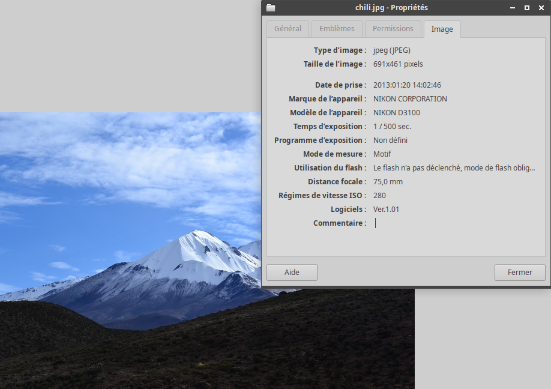

Les métadonnées EXIF
Lors de la prise d'une photo par un appareil photo numérique, des données supplémentaires sont écrites dans le fichier. Il s'agît d'informations sur l'appareil photo, ses réglages et parfois de la localisation de la prise de vue si l'appareil le permet. L'ensemble de ces informations est enregistré toujours selon le même format et on parle de métadonnées EXIF (Exchangeable image file format).
Beaucoup des métadonnées sont techniques, mais certaines sont plus sensibles et peuvent représenter une atteinte à votre vie privée. Il est donc important de contrôler ces métadonnées et si besoin de les supprimer avant de poster une photographie sur internet. De nos jours, la plupart des réseaux sociaux les supprime pour vous.
- Télécharger cette photo : night.jpg
- Accéder aux propriétés du fichier (par un clic droit).
- Quel est la marque et le modèle du smartphone utilisé pour prendre cette photo ?
- Quand cette photo a-t-elle été prise ?
- Quelles sont les coordonnées géographiques de la prise de vue ?
- Quelle est la définition de l'image ?
{kind=link}
- Télécharger cette photo : tree.jpg
- Déposer cette photo sur le site https://jimpl.com/.
- Quand cette photo a-t-elle été prise ?
- Où cette photo a-t-elle été prise ?
- Utiliser les outils proposés sur ce site pour retirer les métadonnées.
- Vérifier, à l'aide des propriétés du fichier, que la photo ne contient plus de métadonnées.
{kind=link}
Les médias annoncent souvent que ces métadonnées servent à prouver qu'une image a été prise au bon moment au bon endroit (fact-checking).
- Télécharger cette photo : Paul.jpg
- Vérifier que cette photo a été prise à Berlin le lendemain de la chute du mur.
- Cela vous semble-t-il possible ?
{kind=link}